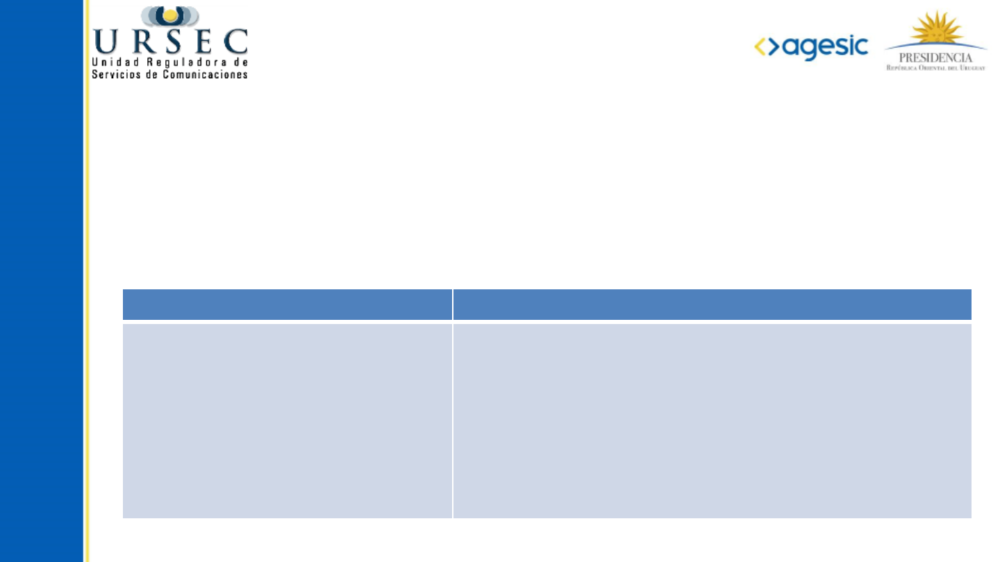
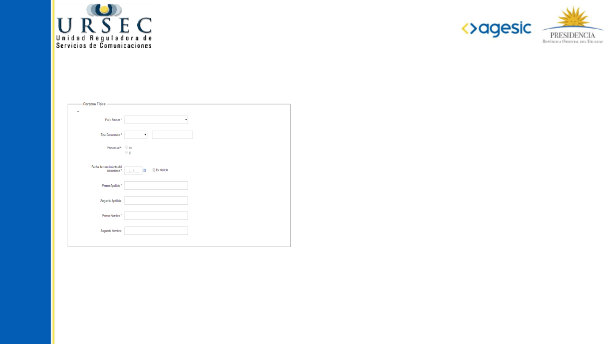
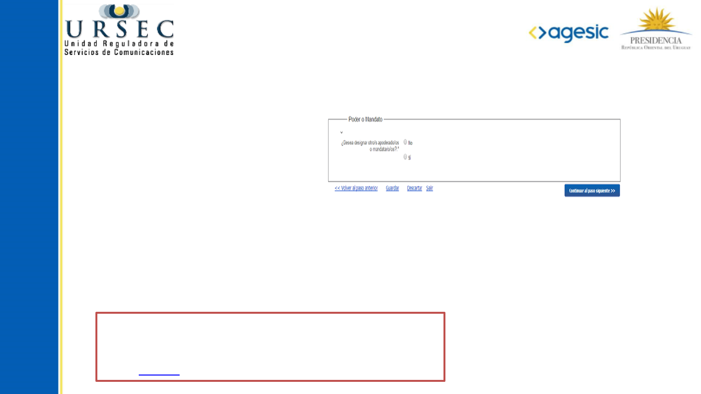
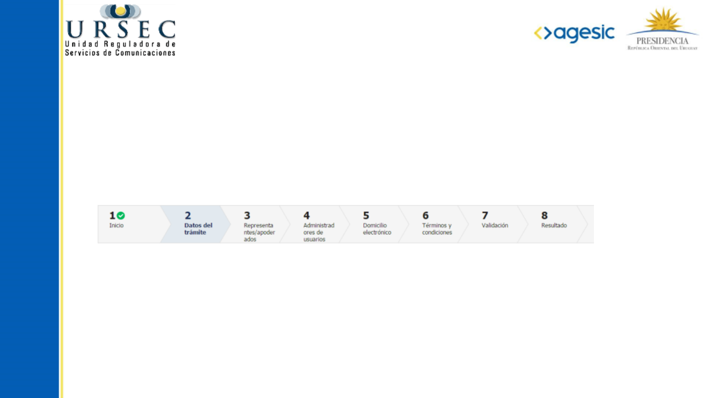
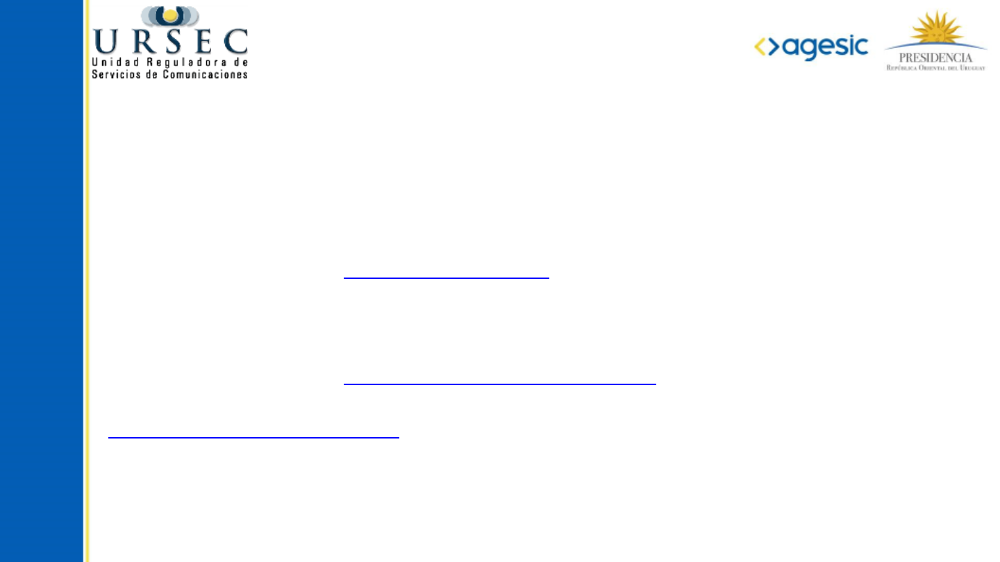

Instructivo para
PERSONAS FÍSICAS

❮
❯
El trámite especifica distintos roles de usuario.
A continuación le proporcionaremos un listado de los datos solicitados que deberán tener en
cuenta según se trate de:
Rol Datos necesarios
Titular
Apoderado (en caso de ser
designado)
Administrador de usuario de
trámites (opcional)
Usuarios de notificaciones
electrónicas (opcional)
Documento -Tipo, Número y vencimiento- y datos de
ubicación
Login del usuario (Documento de Identidad) tipo de
poder, vencimiento
Login del usuario (Documento de Identidad)
Login del usuario (Documento de Identidad)
¿Qué información necesita antes de iniciar
el trámite?

❮
❯
Información del Titular
Deberá ingresar los datos del domicilio real y domicilio
constituido en Montevideo a los solos efectos judiciales.
En este último caso el dato Departamento, queda
restringido a Montevideo.
Se pide:
Departamento, localidad, código postal, vialidad,
nombre, número, letra, solar, manzana, nombre del
inmueble, bloque, torre, piso, unidad, barrio, tipo de
entidad colectiva, nombre de entidad colectiva,
descripción de la ubicación.
Si en el formulario domicilio real, se selecciona el departamento Montevideo, se desplegará a
continuación la siguiente opción: “¿El Domicilio Real es igual al Domicilio Constituido?”
Si se marca esta opción, los datos correspondientes al domicilio constituido en Montevideo, se cargan
automáticamente con los del domicilio real.

❮
❯
Información del Apoderado (si corresponde)
Si se selecciona la opción “Sí”, entonces se muestra el formulario “Datos de los apoderados/
mandatarios”.
Se pide:
● Login del usuario (documento de identidad)
● Poder: Tipo y vencimiento
A tener en cuenta:
Si tiene apoderados, se requiere CERTIFICADO NOTARIAL:
● Vigencia 30 días
● Modelo
En el caso de designar apoderados:

Información de los Administradores de
Trámites en línea
Si se selecciona la opción “Sí”, entonces se muestra el formulario “Datos de los
administradores de trámites en línea”
Se pide:
● Login del usuario (documento de identidad)
El titular y el apoderado es “por defecto” administrador de trámites en línea, pero si se desea
designar otro/s administradores pueden agregarse.

Información de los Usuarios de
Notificaciones electrónicas
Si se selecciona la opción “Sí”, entonces se muestra el formulario “Datos de los usuarios de
Notificaciones electrónicas”
Se pide:
● Login del usuario (documento de identidad)
Los titulares o apoderados cuentan con permiso de acceso a todos los tipos de notificaciones,
pero si se desea establecer otros usuarios pueden agregarse.

❮
❯
¿Cuáles son las Etapas del trámite?
Barra de Seguimiento:
En esta barra se ven los diferentes pasos por los que hay que transitar para cargar la
información necesaria para dar inicio al trámite.
Cada indicador de paso de la barra toma un color más oscuro en el momento que se está
ejecutando.
En este caso, se encuentra en el paso 2 del trámite.
El tilde blanco sobre fondo verde que aparece a la derecha del número de paso, indica que el
mismo ya se ha completado.

¿Cómo finaliza el trámite?
Nota: El certificado notarial se solicitará solo en el caso que tenga
apoderado



❮
¿Dónde puedo realizar consultas?
En el organismo:
En forma telefónica a través de los números: 0800 1872 - +598 2902 8082 Int: 200 –
Fax +598 2902 8082 Int: 292.
Vía web a través del mail: entrada@ursec.gub.uy
En los canales de Atención Ciudadana:
En forma telefónica a través del 0800 – INFO (4636) o *463.
Vía web a través del mail: atencionciudadana@agesic.gub.uy .
En forma presencial en los Puntos de Atención Ciudadana, ver direcciones en
www.atencionciudadana.gub.uy.